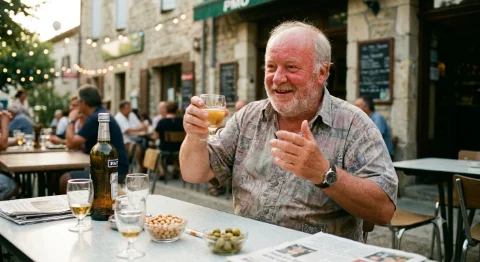
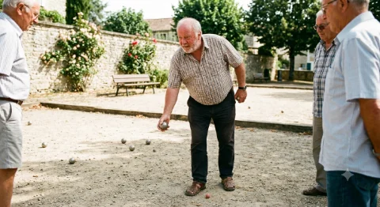
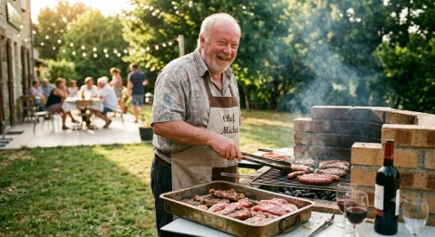
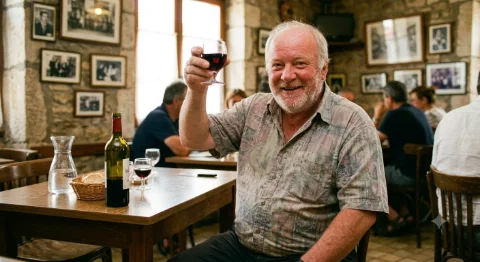
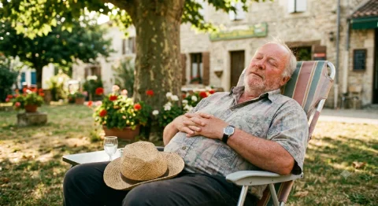
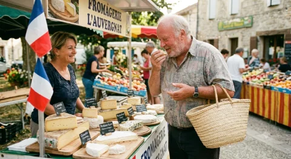
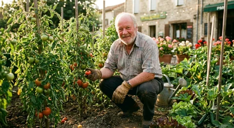

Monument national, trésor vivant, patrimoine immatériel de l'humanité : le Michel.
Bienvenue au Paradis du Chmich
Ici, l'apéro est éternel, la pétanque est un sport olympique, et le rosé ne tiédit jamais.

Michel à l'apéro18h02. Michel est déjà en avance de deux tournées.

Michel à la pétanque« Tu tires ou tu pointes ? » — Michel, philosophe.

Michel au barbecuePersonne d'autre ne touche à la pince. Personne.Michel en marcelDevant sa caravane, torse bombé, fier comme un roi.

Michel lève son verre« À la nôtre ! » — et à celle d'après, aussi.

Michel fait la siesteLe journal sur le ventre : technique ancestrale.

Michel au marchéIl connaît le fromager, le fromager le connaît.Michel à la beloteCapot. Encore. On ne joue plus avec Michel.

Michel et son potagerSes tomates ont gagné trois concours cantonaux.
« Tout Michel est unique. C'est d'ailleurs troublant qu'ils soient tous pareils. »
Le Panthéon des Michel
Dix hommes. Un seul prénom. Un patrimoine national que le monde entier nous envie (probablement).
01
Michel Polnareff
Chanteur, pionnier de la pop française
Voix haut perchée, lunettes blanches indécollables et mélodies immortelles : depuis « La poupée qui fait non » (1966), Polnareff a offert à la France « Love me, please love me », « Lettre à France » ou « Goodbye Marylou ». Exilé de longue date en Californie, il reste l'un des compositeurs les plus doués de sa génération.
L'anecdote
En 1972, pour annoncer son spectacle à l'Olympia, il placarde dans Paris 6 000 affiches où il pose fesses à l'air. Résultat : condamné pour outrage aux bonnes mœurs à une amende par affiche. L'histoire retiendra que c'est le postérieur le plus cher de la chanson française.
02
Michel Sardou
Chanteur, monument à lui tout seul
Plus de 350 chansons, 100 millions de disques : « Les lacs du Connemara », « La maladie d'amour », « Je vole »… Adoré, contesté, imité dans tous les karaokés, Sardou est la bande-son officielle de tous les mariages de France depuis un demi-siècle.
L'anecdote
« Les lacs du Connemara » a été écrite sans que personne n'ait mis les pieds en Irlande : la sonorité « cornemuse » venait d'un synthétiseur, et Pierre Delanoë a rédigé les paroles à l'aide d'un guide touristique. Le tube celtique le plus français de l'histoire.
03
Michel Platini
Footballeur, triple Ballon d'or
Numéro 10 légendaire des Bleus, roi du coup franc, champion d'Europe 1984 avec 9 buts en 5 matchs — record toujours invaincu. Trois Ballons d'or consécutifs (1983, 1984, 1985), une carrière dorée à la Juventus, puis une reconversion de dirigeant plus… mouvementée.
L'anecdote
Adolescent, il est recalé par le FC Metz après avoir raté un test médical : on lui diagnostique une insuffisance respiratoire. Il signe donc à Nancy. Le joueur jugé « pas assez costaud » remportera trois Ballons d'or. Le médecin de Metz, lui, préfère qu'on n'en parle plus.
04
Michel Drucker
Animateur de télévision éternel
À l'antenne depuis 1964, Drucker a survécu à l'ORTF, au passage à la couleur, à la TNT et à onze présidents de la République ou presque. Son canapé rouge de « Vivement dimanche » est le meuble le plus célèbre de France.
L'anecdote
Sa longévité est telle qu'elle est devenue un gag national : entré à la télévision sous de Gaulle, il y est toujours. En France, deux choses sont certaines : les impôts, et Michel Drucker le dimanche après-midi.
05
Michel Blanc
Acteur et réalisateur
Membre fondateur de la troupe du Splendid, il est à jamais Jean-Claude Dusse des « Bronzés », l'éternel loser qui espère « conclure ». Mais derrière le comique se cachait un immense acteur, récompensé à Cannes et capable de tout jouer, du burlesque au tragique.
L'anecdote
L'éternel malchanceux du cinéma français était en réalité l'un des plus primés : prix d'interprétation à Cannes 1986 pour « Tenue de soirée », puis prix du scénario à Cannes 1994 pour « Grosse fatigue »… où il joue son propre rôle face à un sosie qui lui vole sa vie. Même pour se plaindre de lui-même, il gagnait des prix.
06
Michel Houellebecq
Écrivain, prix Goncourt 2010
Romancier le plus traduit, le plus commenté et le plus dépressif de la littérature française contemporaine. « Les Particules élémentaires », « La Carte et le Territoire », « Soumission » : chaque parution est un événement national, cigarette au bec comprise.
L'anecdote
En 2011, il disparaît en pleine tournée de promotion, au point que la presse évoque un enlèvement — il avait simplement oublié de prévenir. Beau joueur, il en fait un film en 2014 : « L'Enlèvement de Michel Houellebecq », où il joue lui-même son propre kidnapping. Méta, comme toujours.
07
Michel Fugain
Chanteur, chef de troupe
« Une belle histoire », « Fais comme l'oiseau », « Je n'aurai pas le temps » : Fugain a écrit la bande-son des étés français des années 70, avec un sens de la mélodie solaire et un enthousiasme inoxydable.
L'anecdote
En 1972, il fonde le Big Bazar : une troupe d'une quarantaine de chanteurs-danseurs en costumes multicolores, mi-comédie musicale, mi-communauté hippie, qui vivait et tournait ensemble. Imaginez une colonie de vacances géante… numéro un du hit-parade.
08
Michel Galabru
Acteur, 250 films au compteur
L'adjudant Gerber du « Gendarme de Saint-Tropez », le père de « La Cage aux folles », mais aussi un tragédien bouleversant, César du meilleur acteur pour « Le Juge et l'Assassin » (1977). Une gouaille, une trogne, une légende.
L'anecdote
Il assumait avec une franchise désarmante d'avoir tourné dans des dizaines de navets « pour payer les factures », déclarant en substance qu'il acceptait tout et triait après. Résultat : 250 films, quelques chefs-d'œuvre, beaucoup de nanars — et zéro regret.
09
Michel Berger
Auteur-compositeur, orfèvre de la variété
Pygmalion de France Gall, créateur de « Starmania » avec Luc Plamondon, auteur de « Message personnel » pour Françoise Hardy et de « Quelque chose de Tennessee » pour Johnny. Disparu trop tôt en 1992, il reste le mélodiste absolu de la chanson française.
L'anecdote
Michel Berger ne s'appelait pas Berger : son vrai nom était Michel Hamburger, fils du grand professeur de médecine Jean Hamburger. On comprend qu'un futur crooner ait préféré éviter de signer ses ballades romantiques « Hamburger ».
10
Michel Audiard
Dialoguiste, mitrailleur de répliques
La plume derrière « Les Tontons flingueurs », « Un singe en hiver » ou « Le cave se rebiffe ». Ses dialogues d'argot ciselé sont récités par cœur dans tous les dîners de famille depuis 60 ans. Son fils Jacques a eu une Palme d'or ; lui, il a eu l'immortalité.
L'anecdote
C'est à lui qu'on doit la réplique la plus citée du cinéma français, dans « Les Tontons flingueurs » (1963) : « Les cons, ça ose tout. C'est même à ça qu'on les reconnaît. » Soixante ans plus tard, elle sert encore dans toutes les réunions de copropriété.
Le Juke-box des Michel
Des Beatles à France Inter : la preuve en musique que ce prénom inspire les plus grands.
« Michelle »
The Beatles — 1965
Paul McCartney a composé « Michelle » en pastichant les chanteurs de cabaret rive gauche qu'il imitait, adolescent, dans les soirées d'étudiants à Liverpool pour faire chic. Des années plus tard, John Lennon lui suggère d'en faire une vraie chanson : Paul demande alors à Jan Vaughan, professeure de français et épouse d'un ami, de lui souffler des mots qui sonnent bien — ce sera « Michelle, ma belle, sont les mots qui vont très bien ensemble ». La chanson remporte le Grammy de la chanson de l'année en 1967. Le prénom devait juste « sonner français ». Mission accomplie.
« Michèle »
Gérard Lenorman — 1976
À l'origine, ce texte du jeune Didier Barbelivien — inspiré d'un flirt de lycée à Chaptal — s'appelait… « Marcelle ». Lenorman adore la mélodie mais refuse net le prénom, « tout sauf romantique », et le remplace par Michèle : celui d'une amourette de ses 15 ans en Auvergne, qui s'était terminée avec le père de la demoiselle le menaçant d'un fusil. Enregistrée à l'automne 1975, la chanson se classe numéro un en février 1976 et se vend à plus de 300 000 exemplaires. Merci Michèle. Et pardon, Marcelle.
« Les Michel »
Frédéric Fromet (France Inter) — 2016
La seule chanson de l'histoire entièrement consacrée aux Michel en tant que peuple. Diffusée dans « Si tu écoutes, j'annule tout » sur France Inter en janvier 2016, cette chanson satirique de Frédéric Fromet passe en revue les Michel de France avec la tendresse moqueuse qui caractérise ce site. Autant dire : notre hymne officiel.